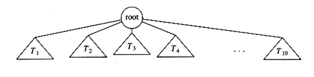
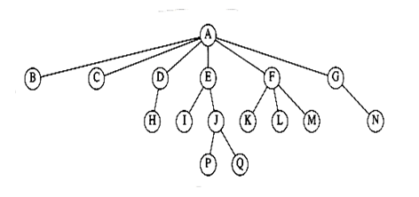
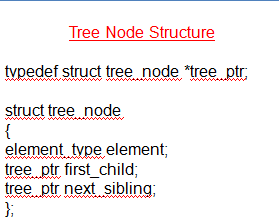
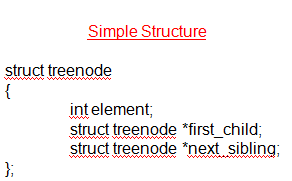
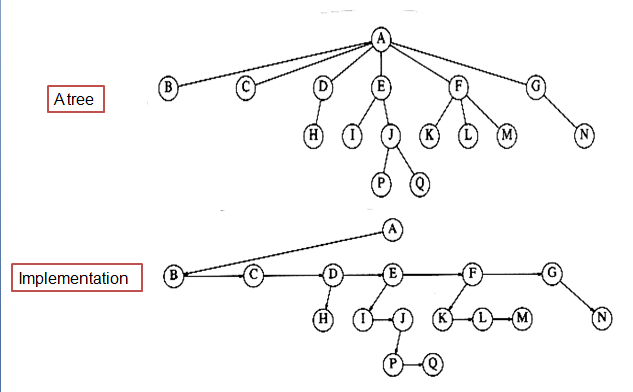
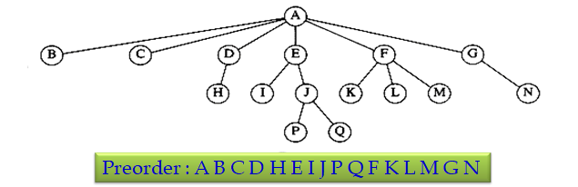
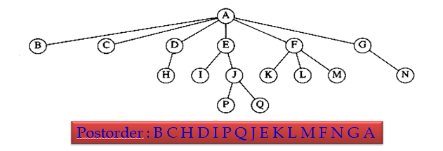

3.1 Trees
3.1.1 Trees - Data Structure
- A tree is a collection of nodes.
- The collection can be empty, which is sometimes denoted as A.
- Otherwise, a tree consists of a distinguished node r, called the root, and zero or more (sub)trees T1 , T2 , . . . , Tk , each of whose roots are connected by a directed edge to r.
- The root of each subtree is said to be a child of r, and r is the parent of each subtree root.

- So, a tree is a collection of n nodes, one of which is the root, and n - 1 edges.
- That is there are n - 1 edges which follows from the fact that each edge connects some node to its parent, and every node except the root has one parent

3.1.3 Tree - Terms
- Leaf - Nodes with no children are known as leaves
- Siblings - Nodes with the same parent are siblings
- Path - A path from node n1 to nk is defined as a sequence of nodes n1 , n2, ..., nk such that ni is the parent of ni+1 for 1<= i < k.
- Length - length of a path is the number of edges on the path.
- Depth - length of the unique path from the root to ni ; root is at depth 0.
- Height - Height of a node ni is the longest path from ni to a leaf; So, all leaves are at height 0.
- The height of a tree is equal to the height of the root.
- The depth of a tree is equal to the depth of the deepest leaf which is always equal to the height of the tree.
- If there is a path from n1 to n2 , then n1 is an ancestor of n2 and n2 is a descendant of n1.


Tree - Implementation

3.1.3 Tree - Application
- to implement the file system / directory structure in many common operating systems, including UNIX, VAX/VMS, and DOS.
- to evaluate arithmetic expressions
- to support searching operations in O(log n) average time
3.1.4 Tree - Traversal
- Traversal refers to the process of visiting (checking and/or updating) each node in a tree data structure, exactly once.
- Traversals are classified by the order in which the nodes are visited as follows.
- Preorder Traversal
- Postorder Traversal
- Inorder Traversal
Preorder Traversal
- Display the data part of the root (or current node).
- Traverse First subtree using Preorder traversal
- Traverse the Second subtree using preorder traversal
- Continue this till last subtree using preorder traversal

Postorder Traversal
- Traverse First subtree using Postorder traversal
- Traverse the Second subtree using postorder traversal
- Continue this till last subtree using postorder traversal
- Display the data part of the root (or current node).
